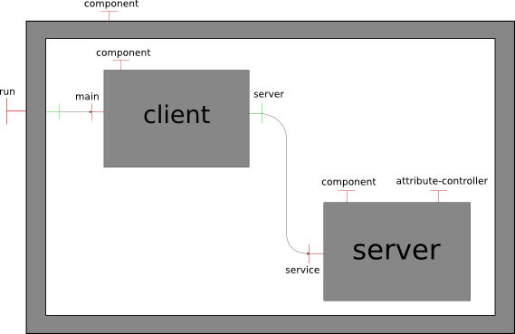

One of the main features of the Fractal component model is that it is fully dynamic and reflexive: it is possible both to discover the structure of a Fractal application (introspection) and to modify it (intercession) at runtime. This makes it possible to build, for example, administration tools like Fractal Explorer with which it is easy to navigate inside a running application and modify it interactively. It is also possible to program dynamic reconfigurations, even unanticipated ones, to be executed in a running application. This is important in order to evolve applications without stopping and redeploying them (for example to update a component or subsystem) and to build self-adaptive and autonomic systems which must take reconfiguration decisions -- and apply them -- dynamically and automatically (i.e. without human intervention).
Such dynamic discovery and reconfigurations can be programmed in the same language than the application itself, for example Java, using the standard Fractal APIs. However, such an approach has several drawbacks:
Interface interface...System.exit()), or simply to loop forever.In order to overcome these limitations while still retaining Fractal's advantages, we have designed and implemented a new language, called FScript, to navigate inside Fractal architectures and dynamically reconfigure them. FScript can be though of as the dual of the standard Fractal ADL: while the ADL (Architecture Description Language) uses a declarative approach to specify the initial configuration of an application, FScript is an imperative language and is used to incrementally reconfigure a running application.
To do this, FScript provides a special notation called FPath to navigate intuitively inside an architecture and select parts of it (Section 2). These elements can then be acted upon to reconfigure the architecture using primitive Fractal operations or user-defined reconfigurations scripts (Section 3). Beyond its direct syntactic support for Fractal concepts, the main feature of FScript is that it provides guarantees on the consistency of the reconfigurations (Section 3.1) by considering these as transactions. FScript has been implemented as a simple interpreter which can be easily embedded in a Fractal application (in Java), or used interactively through a text console (Section 4).
FPath is a special notation used inside the FScript language to navigate inside Fractal architectures and select elements in it according to some predicate. Its syntax and execution model are inspired by the XPath language which solves the same problem on XML documents (although FPath does not use XML at all).
FPath sees a given Fractal architecture as an oriented graph with labelled arcs. Different kinds of nodes represent all the architectural elements we chose to reify:
component interface);attribute-controllers;These nodes are connected by labelled arcs, which denote
the kind of relation between them. For example, an arc
labelled interface goes from a given component node to each interface
node representing the component's interfaces. In the same way, if
composite C1 contains C2 as a sub-component, the
corresponding nodes N1 and N2 will be connected by two
arcs: one labelled child from N1 to N2, and
one labelled parent from N2 to N1.
The following types of arcs, called axes are defined in FPath:
component: from any kind of node to the component owning this
node;attribute: from a component node to all its configuration
attributes;interface: from a component node to all its interfaces, and from a
method node to the interface of which it is part;method: from an interface to all its methods;binding: from an client interface node to the server interface it
is bound to, if any;child (resp. parent): from a component to its direct
children (resp. parents);sibling: from a component to all the other components which have at
least one direct super-component in common with it;descendant (resp. ancestor): from a component to all
its direct and indirect children 'resp. parents). descendant
(resp. ancestor) is thus the transitive closure of child
(resp. parent).Given this representation, FPath expressions
denote relative paths starting from an initial (set of) node(s) in the
graph. Such a path is made of a series of steps, each made of up to three
elements: axis::test[predicate] (the predicate is optional). On each
step, an initial set of nodes is converted to a new set by following all the arcs
with a label corresponding to the axis, then filtering the result using
the test (on the node names) and optional predicates (boolean
expressions applied to each candidate). For a multi-step path, this algorithm is
repeated with the result of the previous step as the current node-set of the
next.
For example, the FPath expression
sibling::*/interface::*[provided(.)][not(bound(.))] is made of two
steps. The first one uses the sibling axis, an "empty"
test * (which is always true) and has no predicate. The second step
uses the interface axis, no test either, and two predicates which are
combined. Inside the predicates, the dot "." represents the current
node on which the predicate is evaluated. Evaluating the complete expression
starting from an initial component node will:
provided()) which are not already bound.The expressions used as predicates can be any FPath
expression, which includes not only paths but also standard arithmetic operations,
comparisons, function calls, litteral strings and numbers and finally variable
references ($varName). When a path expression is used as a predicate,
it is considered true if and only if it returns a non-empty set of nodes. For
example, to find all the components in a application which provide configuration
attributes, one could use the following expression on the application's root
component: descendant-or-self::*[./attribute::*]. This initially selects
all the components contained in the root, recursively, and then filters this set to
retain only those from which the step ./attribute::* returns a non-empty
set, i.e. the nodes which have configuration attributes. Note that this expression
is different from descendant-or-self::*/attribute::*, which returns the
configuration attributes themselves, not the components which provide them.
These example expressions are described in the context of the following example application:

$root/child::client/interface::server/binding::*/parent::*
From the root component, selects its direct child
named client, then follows the binding of its interface
named server, resulting the service interface. The
final step finds the parent(s) of this node. The service node is an
interface node, and thus has no parent; however, it is owned by
a component node which can have parents. Normally, one should have
to add a component::* step before parent::*, but FPath
can do it automatically for interface and attribute nodes. The final result is a
singleton which contains the initial root component node.
size($c/interface::*[required(.) and not(bound(.))]) > 0
Inside predicates, the dot (.) represents the current node to
which the test is applied.
$itf/sibling::*/interface::*[provided(.)][subtype(., $itf)]
The $itf variable represents the interface to connect.
$root/descendant-or-self::*[size(./parent::*) > 1]
Finds all the components in the system which have more than one
parent. The axis descendant-or-self is a variant
of descendant which also include the initial nodes in the result.
Suche variants also exist
for child, parent, ancestor
and sibling.
header configuration
attribute of the server component.
$root/child::client/interface::s/binding::*/attribute::header
For comparison, here is the equivalent Java code using the standard Fractal API:
try {
ContentController cc = Fractal.getContentController(root);
Object[] children = cc.getFcSubComponents();
for (int i = 0; i < children.length; i++) {
Component kid = (Component) children[i];
String name = null;
try {
NameController nc = Fractal.getNameController(kid);
name = nc.getFcName();
} catch (NoSuchInterfaceException nsie) {
name = "";
}
if (name.equals("client")) {
try {
BindingController bc = Fractal.getBindingController(kid);
Interface itf = (Interface) bc.lookupFc("s");
if (itf != null) {
Component other = itf.getFcItfOwner();
AttributeController ac= Fractal.getAttributeController(other);
Class klass = ac.getClass();
try {
Method meth = null;
try {
meth = klass.getMethod("getHeader", null);
} catch (NoSuchMethodException nime) {
meth = klass.getMethod("isHeader", null);
}
if (meth != null) {
try {
Object value = meth.invoke(ac, null);
System.out.println(value);
} catch (Exception e) { /* ignore */
}
} catch (Exception e) { /* ignore */ }
}
} catch (NoSuchInterfaceException nsie) { /* ignore */ }
}
}
}
} catch (NoSuchInterfaceException nsie) {
// ignore
}The preceding section described the FPath notation which is used to navigate inside a Fractal architecture and select parts of it, but can not modify the architecture. The complete FScript language, of which FPath is just a part, enables the definition of reconfiguration actions to apply to a running application. FScript is a simple imperative/procedural language whose main features are:
In this section, we present the syntax and semantics of the rest of the language, beyond FPath.
Here is a simple example of the definition of an FScript reconfiguration action which illustrates almost all of FScript constructs. It automatically connects a component's required interfaces by discovering the compatible server interfaces on sibling components.
action auto-bind(comp) = {
// Selects the interfaces to connect
clients = $comp/interface::*[required(.)][not(bound(.))];
for itf : $clients {
// Search for candidates compatible interfaces
candidates = $comp/sibling::*/interface::*[compatible?($itf, .)];
if ($candidates) {
// Connect one of these candidates
bind($itf, one-of($candidates));
}
}
return size($comp/interface::*[required(.)][not(bound(.))]) == 0;
}
This defines a new reconfiguration action named auto-bind,
which takes one parameter, named comp. The body of the action is
defined inside braces, and consists in a sequence of simple statements (assignements
and procedure calls) ended with semicolons and control structures (iteration and
conditionals). FScript also supports comments, using C/C++ syntax.
Given a component comp as parameter, this action first uses an
FPath expression to find all its client interfaces which are not yet bound, and
stores the result in variable clients. The action the iterates over
this set of client interfaces using the itf iteration variables. On
each iteration, the action searches for compatible interfaces on the siblings
of com, again using an FPath expression. This set of candidates is
stored in variable candidates. Finally, the action tests whether this
set is empty, and if not, uses the primitive action bind() (which
corresponds to Fractal's BindingController#bindFc() method) to connect
the client interface itf to one of the candidates. Finally, it returns
a boolean indicating whether all client interfaces have been bound.
FScript distinguishes two kinds of procedures: functions and actions.
Functions are guaranteed to be side-effect free, and can only introspect an
architecture, not modify it. They can be used safely inside FPath requests, for
example in the predicates. Functions are defined like actions, expect that they use
the function keyword instead of action, and can only
invoke other functions, not actions (be they primitive or user defined). FScript
provides a standard library of primitive functions and actions which gives the user
access to all the information available from the Fractal API, and all the standard
reconfigurations.
The complete list of primitive actions is the following:
new(tmplName) instanciates and returns a new component
using the Fractal ADL. The name passed as a parameter is used as is by the
ADL's Factory.add(composite, subcomponent) and remove(composite,
subcomponent) are used to add and remove a sub-component from a composite.
They correspond to ContentController's addFcSubComponent()
and removeFcSubComponent().bind(clientItf, serverItf) and unbind(clientItf) are
used to bind two compatible interfaces together and to unbind a client interface.
They correspond to BindingController's bindFc()
and unbindFc().start(component) and stop(component) are used to start
and stop a component. They correspond
to LifeCycleController's startFc()
and stopFc().set-name(component, name) changes the name of a component, using
its NameController.set-value(attribute, value) changes the value of a configuration
attribute accessible through its AttributeController.As Fractal is designed to be extensible, new controllers -- and hence new reconfigurations operations -- can be added to the model. FScript is designed and implemented so that it is easy to add the corresponding FScript primitives.
Variables in FScript are not typed (values are). They are created
either explicitely on their first assignment (varName =
expression;) or implicitely when entering inside the body of a
procedure, where parameters behave like local variables. Variable reference is done
by preceding the name of the variable with a dollar sign (varName).
Variables are lexically scoped, but only procedure bodies introduce a new scope, not
conditionals and iterations.
The control structures available in FScript are voluntarily limited so that we can guarantee the termination of all reconfigurations. They are:
if/then/else structure.
The condition must be a side-effect free expression (i.e. an FPath expression or
function call but not an action call) and is evaluated for its boolean value.
for i : expression {
body
}
Where i is the name of the iteration variable to use (without the
dollar sign), expression is an FPath expression which must return a
set of nodes, and body is a sequence of statements. body
is executed for each element of the set of nodes returned
by expression in turn, with i bound to the current
element.return expression;.FScript's design and implementation guarantee the consistency of reconfigurations. Because these reconfigurations are applied to running applications, we must guarantee that they will not break the target system. To this end, we have chosen a set of consistency criterion, in particular transactional integrity (atomicity, consistency of the final state, isolation) and termination of the reconfigurations. The validation of these criteria is guaranteed in part by the language's structure itself, whose expressive power has been limited, and in part by the implementation. More precisely:
for
each loop, iterates on the result of an FPath expression, which always
returns a finite set of nodes. These constraints guarantee
actions' termination, although they do not provide a time bound.FScript is currently implemented in Java as a simple interpreter. Care has been taken to make it easy to embed in existing Java applications, with only one external dependency outside of Fractal and Fractal ADL (namely, the ANTLR parsing tool).
Once fscript.jar and antlr.jar are
available, one can use FScript to query or reconfigure an application in this
way:
FScriptInterpreter fscript = new FScriptInterpreter();
fscript.loadDefinitions(new FileReader("mydefinitions.script"));
Map vars = new HashMap();
vars.put("root", fscript.createComponentNode(aComponent));
Object result = fscript.evaluate("$root/descendant::*[./attribute::size]", vars);
for (Node n : (Set<Node>) result) {
Component c = ((ComponentNode) n).getComponent();
// do something with c
}result = fscript.execute("my-reconfiguration($root);", vars);
To enable interactive experimentation, FScript also provides a simple,
text-based console. This console provides a prompt where FPath requests and FScript
statements can be entered and executed immediatly. The console also offers a few
special commands (starting with !) to load an external file containing
custom functions and actions definitions and to launch a component through
a Runnable interface. Here is the transcript of a sample session in
which we instanciate the Comanche HTTP server, launch it and reconfigure it
dynamically using custom actions loaded dynamically (lines starting
with # are comments and not part of the session):
# Instanciate Comanche from its ADL definition
FScript> c = new("comanche.Comanche");
# Start the component. This maps to LifecycleController.startFc()
# and only activates the component. It does not start the server.
FScript> start($c);
# Actually launches (in a separate thread) the server through the
# "r" interface (of type Runnable) of the $c component.
FScript> :run r $c
# Load custom actions to manage a cache component
FScript> :load cache.fscript
# Enables the cache on an internal component using a custom
# action. The server does not need to be stopped.
FScript> h = $c/descendant::rh;
FScript> enable-cache($h);
# Get the newly added cache component
FScript> cache = $h/child::cfh;
# Lookup its current maximum size
FScript> $cache/attribute::maximumSize
0
# Change this attribute
FScript> set-value($cache/attribute::maximumSize, 42*1024);